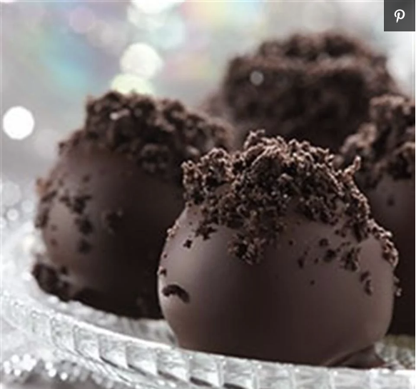

Peanut Butter Fudge

Description:
This is the best recipe for creamy and delicious peanut butter fudge I have ever used. It is great for sharing at work.
Ingredients:
- ½ cup butter
- 1 (16 ounce) package brown sugar
- ½ cup milk
- ¾ cup peanut butter
- 1 teaspoon vanilla extract
- 3 ½ cups confectioners' sugar
Directions:
- Melt butter in a medium saucepan over medium heat.
- Stir in brown sugar and milk.
- Bring to a boil and boil for 2 minutes, stirring frequently.
- Remove from heat.
- Stir in peanut butter and vanilla.
- Pour over confectioners' sugar in a large mixing bowl. (Editors note: Or any sugar really)
- Beat until smooth; pour into an 8x8 inch dish.
- Chill until firm and cut into squares.
Nutrition Facts Per Serving: (15 Servings)
- 357 calories
- protein 3.6g
- carbohydrates 60.1g
- fat 12.8g
- cholesterol 16.9mg
- sodium 114.8mg
For full list, please click here.
Please click here to return to main page.